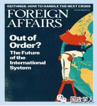

收录于合集

简 介
【 作者 】
Matthias Matthijs，约翰·霍普金斯大学国际政治经济学助理教授，《欧洲未来》杂志编辑，研究兴趣为国际政治经济学、欧洲和欧亚研究、全球理论与历史。
作者主页：https://www.sais-jhu.edu/matthias-matthijs
【 编译 】 ****刘瑛琛
【 来源 】
Matthias Matthijs, Europe After Brexit: A Less Perfect Union, Foreign Affairs, Volume: 96, Issue:1, Pages:85-95
【 期刊简介 】
Foreign Affairs, 外交事务，成立于1922年，由美国深具影响力的外交关系委员会出版的双月刊，是美国最具影响力的外交政策杂志之一，根据2014年的期刊引文报告（Web Of Science），该期刊的影响因子为2.009，在“国际关系”类别的85种期刊中排名第6。(维基百科)。

【 校对 】 杨艺华 李源
【 审核 】 李代霓
引 言
2016年6月23日，英国脱欧公投结果出炉，52%的投票者选择退出欧盟。英国脱欧将给英国自身以及欧盟带来极大的负面影响，特别是在当前欧洲危机重重的情况下，这一事件无疑是雪上加霜。
回顾欧洲一体化的历史，我们会发现，在欧洲单一市场建立以及欧元诞生之初，就已经播下了危机的种子。面对危机，欧洲的精英们又错误地认为，困难将会进一步推动欧洲一体化的进程。但现实却是，经济危机与政治危机，将欧盟推向了解体的边缘。
如果欧盟想要继续生存，就必须搁置欧盟整体与各国民族利益之间的分裂。欧盟需要给各国政府更多的，而非更少的自由来应对危机。
** 焦土之上：欧洲一体化渊源**
20世纪50年代，欧洲的政治精英们建立欧洲经济共同体并非是为了建立一个凌驾于主权国家之上的权力中心，而是为了恢复二战后的国家系统。他们认识到，在当时的情形下，如果国家想要生存并维持经济兴旺和政治稳定，就要进行一定程度的联合。
欧洲的联合必然需要对主权做出一定程度的让步，但并不需要完全以超国家政府的形式代替民族国家。战后的共识是，主权国家需要逐步推进经济自由化，但要对经济政策做出一定的指导以应对艰难时期，欧洲经济共同体就是在这样的理念下建立的。这种政治上的适当让步促进了欧洲经济贸易的繁荣，维持了欧洲的和平与稳定，进而引领了欧洲一体化的成功。
然而，在20世纪80年代中期，政治精英们开始着手建立超国家政府，欧洲一体化不再为了振作民族国家，而是为了禁锢它。
** ** 伟大的实验：《单一欧洲法令》****
1986年欧洲各国签订了《单一欧洲法令》，这是政策制定者对20世纪70、80年代以低增长、高失业率与通货膨胀为表现的“欧洲硬化症”（Eurosclerosis）的回应。政策制定者们认为，只有通过放松管制和自由化，欧洲才能走出经济萧条，而自由统一市场的建立则需要国家权力的撤退。
然而，《单一欧洲法令》的野心过大，它使得劳动力、资本和货物可以在欧洲各国之间自由流动，但就像一些政治科学家所指出的那样，欧洲单一市场的束缚甚至少于美国国内市场。
欧洲创造单一市场的实验付出了代价。市场竞争的加剧带来了一定好处，同时也影响到了一部分人的生存。由于《单一欧洲法令》将统一的欧洲市场完全从国内政治社会机制中剥离，因此即便是在经济不景气的时候，政府也无法为这些人的生活提供保障。国内政府对经济运行无能为力，欧盟的决策又常常与国家利益相悖，结果就是，欧洲内部矛盾格外突出。
** ** ** 危机终将到来：欧盟机制的不完善性******
1992年《马斯特里赫特条约》签订，这是欧盟诞生的标志，但这也意味着欧洲各国政府丧失了更多的权力。
政治精英们建立欧盟本意是将欧洲推向更高程度的联合，可是《马斯特里赫特条约》的宗旨却不同于欧洲一体化的初衷。它将统一货币引入到一体化进程中，却没有建立一个财政、金融与政治联盟这个货币联盟进行补充，同时各国又没有根据形势调节经济的自由，这种机制上的不完善性埋下了危机的隐患。
** ** ** ** 来龙去脉：欧洲移民危机********
起初，欧洲单一市场内部人口的流动是一个次要问题，直至本世纪初，欧盟各国之间的移民率都不高。但当2004年欧盟将其成员国扩大到中欧和东欧的前社会主义国家时，移民率开始上升。这些国家与英、法、德等国经济水平相差较大，这种不平衡导致了巨大的人口流动，人口的大量流动又给流入国的公共服务和安全带来了巨大压力，而近些年的难民危机更是加剧了这种压力。
然而，单一市场没有任何机制去解决欧洲内部人口的巨大流动，欧盟也没有出台任何共同的外部移民政策帮助消化涌入的大量难民。在这样的背景下，很多公民认为他们的政府十分无能，欧盟又无法代表他们的利益，因而民粹主义开始在欧洲兴起。正是因为惧怕移民，同时为了重新获得对英国移民的控制权，许多英国人才在公投中投票要求退出欧盟。
** ** ** ** ** 重新掌控：欧盟的出路**********
所以眼下欧洲该何去何从？许多人认为布鲁塞尔将继续推进欧洲的联合，然而一个更“大”的欧洲却是当前欧盟各种问题的答案。
首先，欧洲的领导人需要找回推进欧洲一体化的初衷，即拯救民族国家而非束缚它们。欧盟只应该关注那些仅凭成员国自身无法有效解决的问题，如贸易谈判、全球变暖或者外交与安全政策合作等。其次，欧洲需要一个政治上的领导者，而德国应当承担起这个领导者的角色。如今，距离罗马条约的签订已经过去了六十多年，现在的欧洲比以往更需要新一轮的妥协。
扫描下方小程序码查看原文p df
本文由国政学人微信公众平台编译首发
更多阅读
国政学人 （ID：guozhengxueren)
为方便学人及时阅读高质量文章
别忘把国政学人设置 星标 哦~


国政学人
支持学术公益与知识传播
微信扫一扫赞赏作者 __赞赏
已喜欢，对作者说句悄悄话
取消 __
发送给作者
发送
最多40字，当前共字
上一页 1/3 下一页
长按二维码向我转账
支持学术公益与知识传播
受苹果公司新规定影响，微信 iOS 版的赞赏功能被关闭，可通过二维码转账支持公众号。